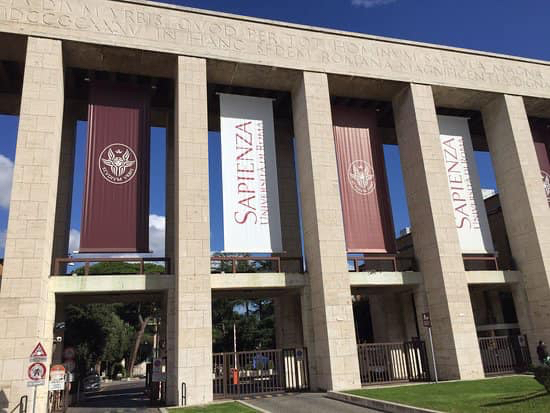
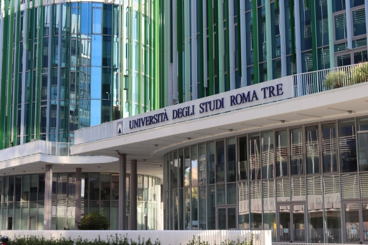
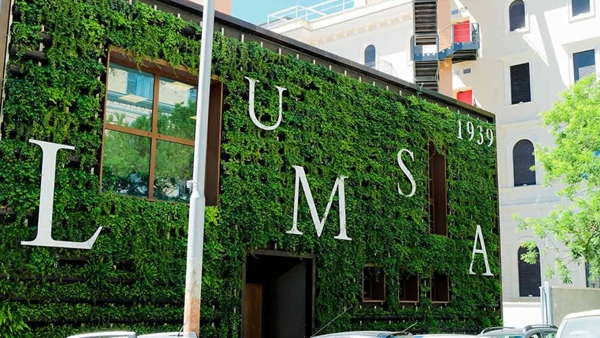

Where are you going to study in Rome
Erasmus Tips: Surviving the Italian University System
Studying in Rome is an amazing experience, but it can also be a bit chaotic at first. The Italian education system is quite different from other countries, and you’ll especially notice it when you're trying to set up your Learning Agreement or choose your courses.
Be ready to face some strange situations in the beginning: confusing information, courses changing schedules without notice, paperwork that doesn’t make much sense... But don’t worry! This is completely normal here, and with a bit of patience, everything works out.
Our main advice:
Don’t stress about the chaos, because that’s just how things work in Italy. The most important thing is to stay calm and ask for help when you need it.
Talk to the Erasmus coordinators at your university – they’re usually very friendly and used to helping with these situations
It’s also super helpful to communicate with your professors, even for small doubts. Most of them are happy to help, and many have a good level of English.
And most importantly… talk to Italian students! Don’t be shy – people here are very open and friendly. Ask questions, look for advice, join WhatsApp groups, and talk to as many people as you can. That will save you more than once.
🎓 La Sapienza – Università di Roma

Description: One of the largest and oldest universities in Europe. It’s highly prestigious both in Italy and internationally.
Location: San Lorenzo area, very close to the city center.
Top Fields: Engineering, Medicine, Humanities, Law.
Language of instruction: Mostly Italian, but there are plenty of courses in English for Erasmus students.
Our experience: We study Telecommunications Engineering at La Sapienza, and we can say the university’s prestige really shows – especially in the engineering field. The academic level is high, with well-equipped labs and highly qualified professors.
Most of our courses have been in English, and although a few were in Italian, the professors had a very good level of English, so communication was easy and clear.
Erasmus note: Great range of English-taught courses and many student associations. The campus is full of life and it’s very easy to meet people from all over the world.
🎓 Università degli Studi Roma Tre

Description: A younger and more modern university, with an innovative approach to education and technology.
Location: Ostiense – Marconi area, southwest of the historic center.
Top Fields: Architecture, Political Science, Communication, Environmental Sciences.
Language of instruction: Italian, with several courses in English.
Erasmus note: Friendly atmosphere, modern campus, and well connected.
🎓 LUMSA – Libera Università Maria Ss. Assunta

Description: A private university with a more humanistic and personalized approach.
Location: Very central, near the Vatican.
Top Fields: Law, Psychology, Education, Communication.
Language of instruction: Mostly Italian, although there are specific programs in English.
Erasmus note: Smaller and more familiar environment, ideal for students who prefer smaller classes